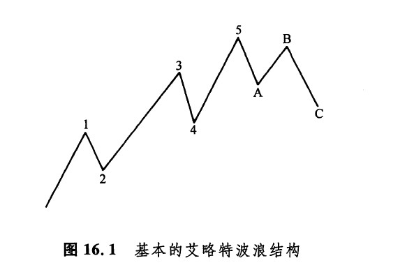

艾略特波浪理论是R.N.艾略特在本世纪初发现的。他从市场各个方面的特性中注意到，价格运动是通过下述基本过程形成的：先是五浪上涨，然后跟着调整性的三浪下跌。如图16.1所示，上述八浪组成了一个完整的市场周期。其中，1浪、3浪、5浪称为主浪（也称推进浪），2浪和4浪称为调整浪（也称次浪）。虽然在图16.1中，艾略特波浪的数浪情况反映出一个上涨的市场，但是，同样的概念也适用于下跌的市场。于是，在下降趋势的市场上，主浪的方向将是向下倾斜的，而调整浪则向上倾斜，与主要趋势方向相反。
艾略特另一方面的重大贡献是，将菲波纳奇数列引入了市场预测研究。因为菲波纳奇比数可以用来推算下一浪的价格目标，所以数浪技术与菲波纳奇比数是相辅相成的。举例来说，我们可以将1浪的高度乘以1.618，由此推测3浪的高度；4浪可能将3浪的运动幅度往回调整38.2%，或者50%；如此等等。

下一篇：艾略特波浪理论与蜡烛图
上一篇：第十六章 蜡烛图与艾略特波浪理论